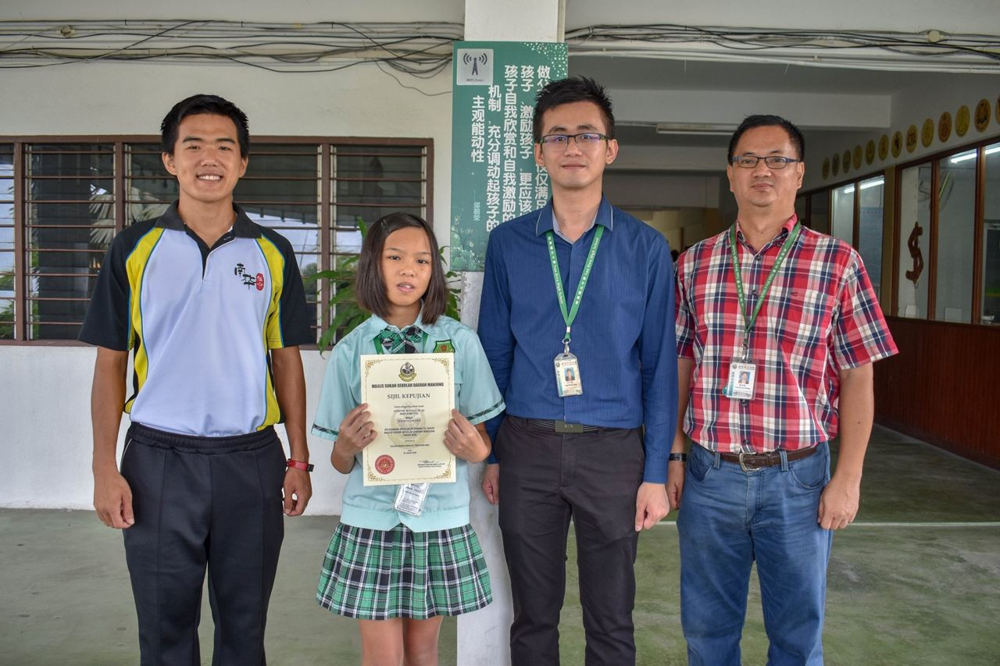
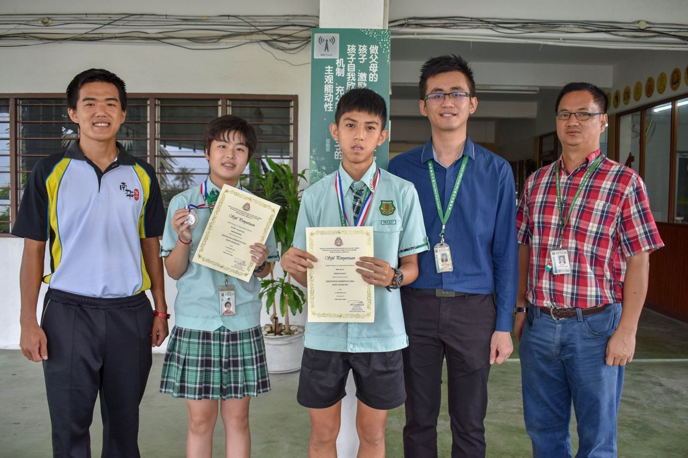
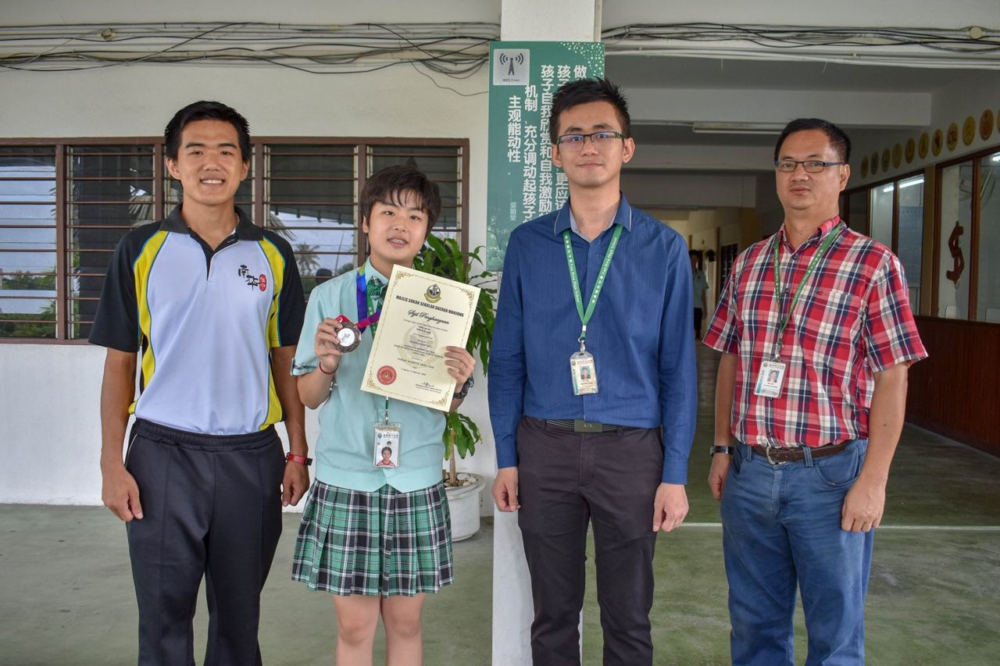

10/2/2020
10/2/2020
新年虽然刚过，但校队依旧送来喜讯，恭喜本校校队在各项比赛斩获佳绩，细节如下：
1. 曼绒县学联游泳赛
主办单位：曼绒县教育局；爱大华华中承办
日期：20/1/2020
比赛地点：南华独中
带队老师：曾长伟
奖项：黄伶祺 初二爱 15岁以下女子组50米蛙式 银牌
2. 曼绒县学联羽毛球赛
主办单位：曼绒县教育局；天定华中承办
日期：3/2/2020~4/2/2020
地点：Manjung Badminton Arena
带队老师：徐泰琨老师
奖项：张诗静 初二爱 15岁以下女子组 季军
3. 曼绒县学联越野赛
主办单位：曼绒县教育局；SMK Dato Idres 承办
地点：SMK Dato Idris
带队老师：曾长伟老师
奖项： 张诗静 初二爱 15岁以下 女子组 第15名
麦嘉晋 初二礼 18岁以下 男子组 第15名
恭喜他们，并希望来年能够更进一步。


